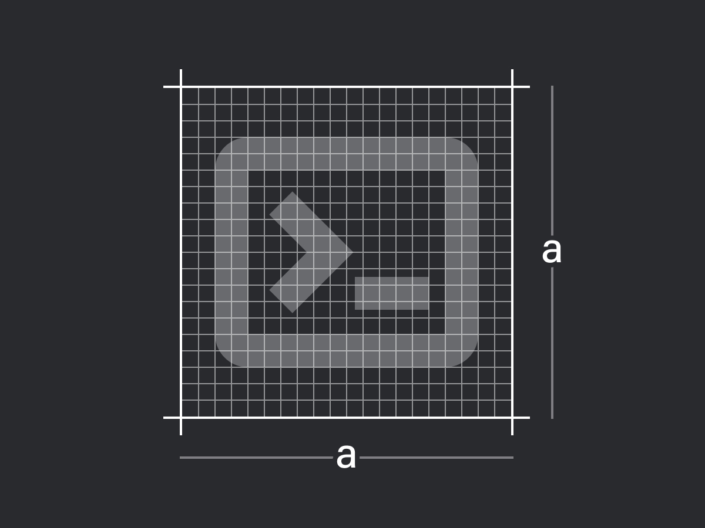
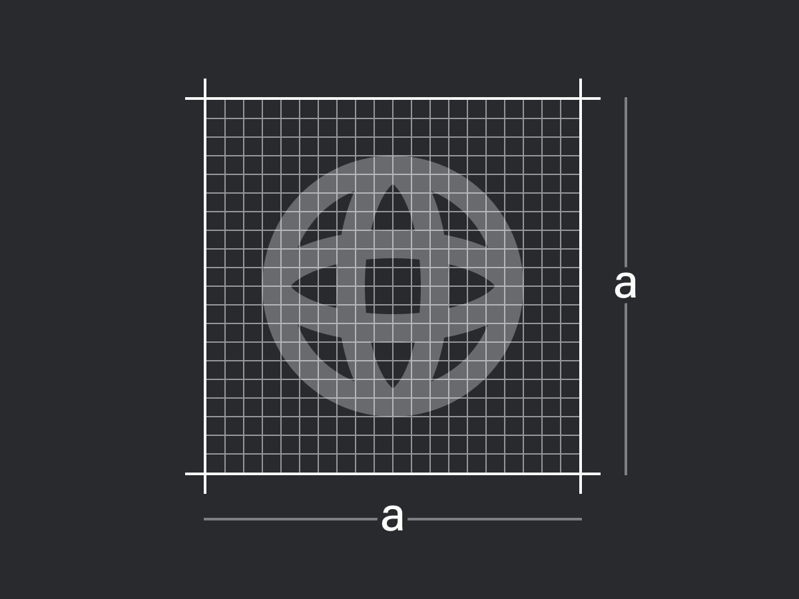
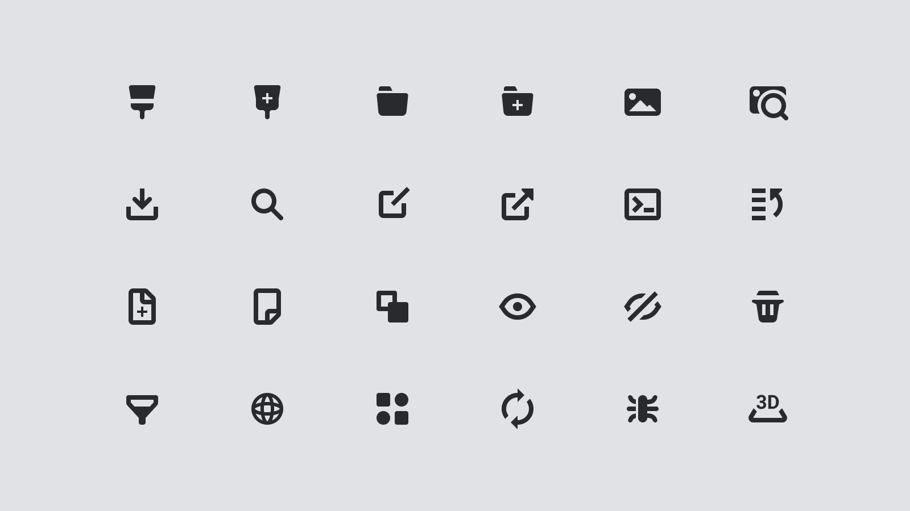
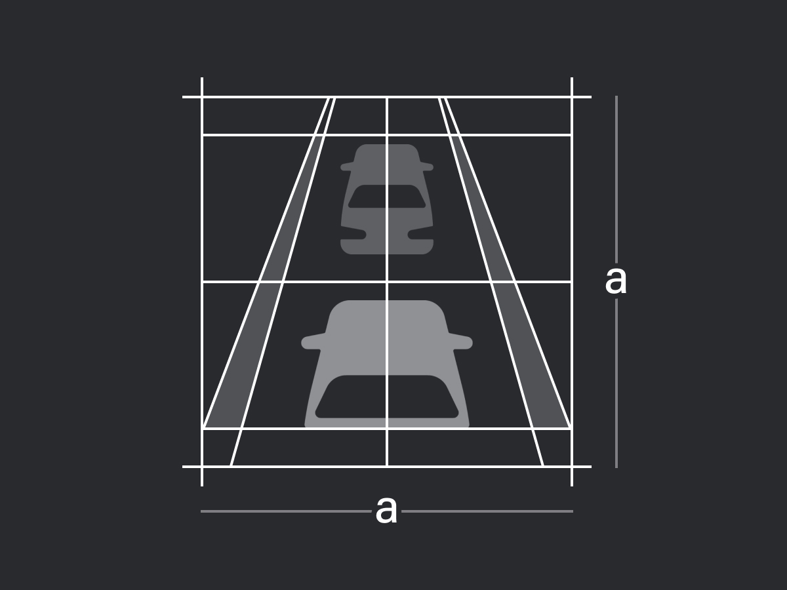
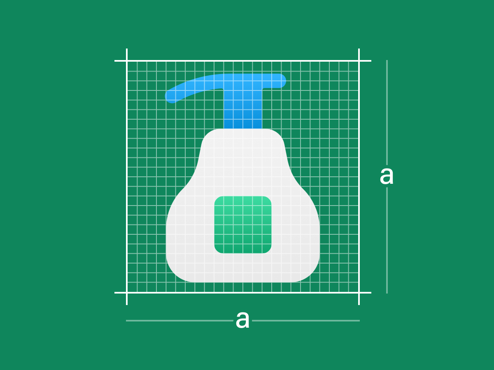
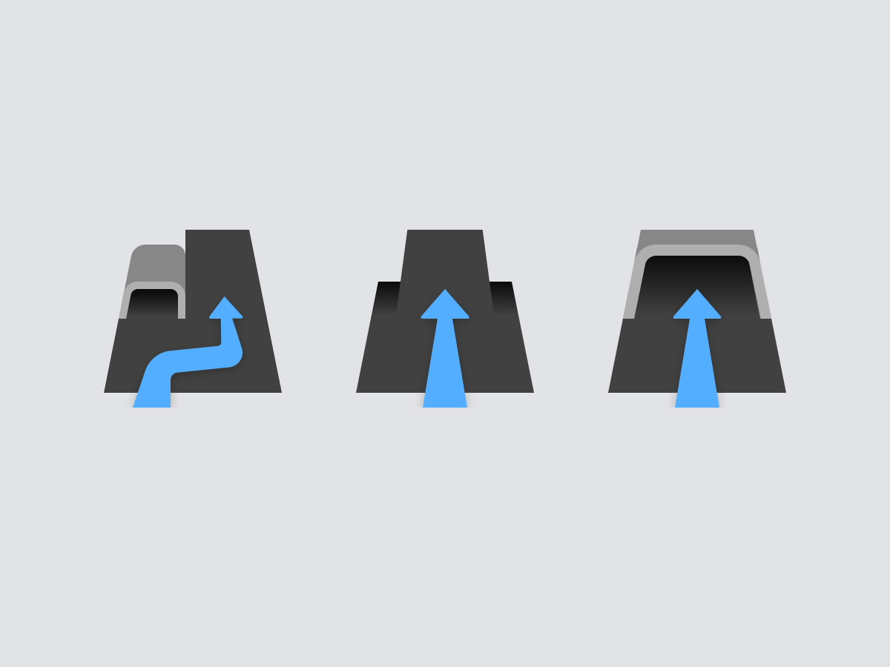
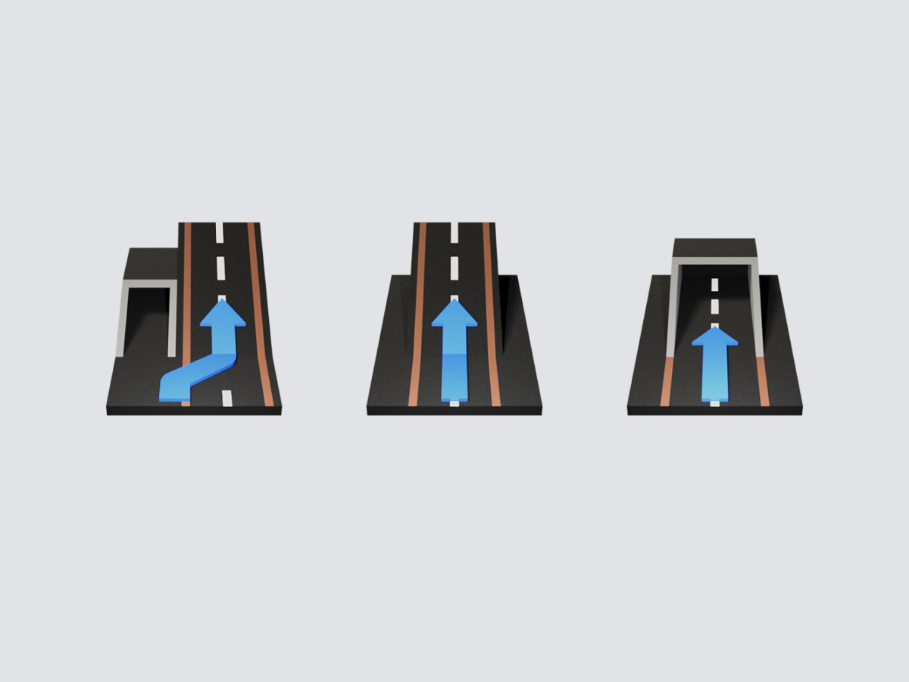

일러스트, 아이콘과 같은 그래픽 요소는 다양한 매체에서 브랜드 아이덴티티를 강화하고 정보의 속성을 빠르게 전달할 수 있는 수단입니다.
이미 많은 오픈소스, 디자인 시스템에서 준수한 표시 수준과 높은 완성도를 갖는 리소스를 사용할 수 있습니다.
하지만 오픈소스의 특성상 장치로서 개성을 부여하거나 브랜드 아이덴티티를 강화하는데는 한계가 있습니다. 제한적 환경에서 시선을 이끄는
가장 효과적인 시각 장치인 만큼, 직접 콘셉트를 담아내고 다양한 환경에서 각기 다른 정보들을 효과적으로 담아낼 수 있는 표현
방법들을 꾸준히 고민하고 있습니다.
아이콘을 표현하는 방법은 다양한 방법이 있지만 정확한 정보를 전달하는 것은 전달하고자 하는 정보의 형상, 의미를 직관적, 사실적으로 묘사하는 것입니다.
하지만 이런 방법은 아이콘이 가지는 주요도가 다른 요소들보다 눈에 띌 수 있기 때문에 전반적인 디자인 밀도를 고려해 제작해야 합니다.
이미지는 정적인 상태보다 동적인 상태일 때 사용자에게 명확한 피드백을 요구하거나 정보를 제공할 수 있습니다. 가장 주요한 정보
속성에 적용해 다른 속성과의 충돌 없이 우선적으로 사용자에게 제공되는 장치로 활용되기도 합니다.
Communication
동적 이미지를 사용한 마이크로 인터랙션은 지나치게 사용할 경우 주목도가 높아지기 때문에 다중으로 사용할 경우 시선의 분산도가 높아집니다.
따라서 핵심 기능과 주요 정보에 적절히 사용해 정보 구조를 효과적으로 구성해야 하고 효과적인 피드백을 위해 사용자의 행동(클릭, 마우스오버 등)에 따라
표시되는 로직을 적용하기도 합니다.
그리드는 각 그래픽 에셋들의 표시 수준을 일관적으로 통합하는데 기본 틀이 되며 형태를 통일하는 하나의 규칙입니다.
엄격한 그리드 시스템 내에서 제작된 자산들은 그만큼 강력한 통일성을 갖추지만 표시할 수 있는 형태가 제한되기도 합니다.
따라서 그리드 시스템 내에서 형태를 묘사하되 적절한 예외 케이스를 통해 효과적으로 묘사될 수 있는 형태 규칙을 적용합니다.



Density
아이콘화된 이미지는 일관된 표현 밀도를 가져야 동일한 주목도를 가지고 기능을 제대로 수행할 수 있습니다. 정보의 유형에 맞게
구분이 필요할 때는 표현 밀도에 차이를 두는 것도 방법이지만 전체 정보의 균형을 위해 색상, 크기, 투명도 등을 조절해 주목도를
한시적으로 변경하는 방법이 있습니다.


Dimension Graphics
모바일, 웹 플랫폼 내에서 이미지를 표현하는 방법은 다양한 방법이 있지만 표현식에 있어 크게 2D 이미지와 3D 이미지로 구분할 수 있습니다.
브랜드 가이드에 따라 개성 있는 그래픽을 사용할 수 있지만, 사용되는 위치와 목적에 따라 적정하게 표현 방법을 정의합니다.
모든 사람은 3차원 사물을 인지하며 살기 때문에 2D 이미지 대비 3D 이미지를 더 사실적인 묘사로 받아들입니다. 그만큼 핵심 정보를 포함한
메타포의 주변 요소도 사실적인 표현을 갖기 때문에 때에 따라서는 정보를 인지하는 속도 측면에서 2D 이미지가 더 효과적일 수 있습니다.
따라서 표현 요소가 우선이 되거나 보조하는 속성에 따라 적절한 스타일을 적용합니다.


Transition
이미지 표현 방식이 전환됨에 따라 사용자의 행동에 대한 명확한 피드백과 부드러운 사용성을 제공하기도 합니다. 하지만 복잡한 로직이 필요한 경우
서비스 성능에 영향을 미칠 수 있기 때문에 호흡이 길어질 수 있는 주요 동선에 배치하는 것이 이미지 전환을 가장 효과적으로 사용하는 방법입니다.
Epilogue
UXUI 디자이너로서 그래픽 디자인 작업을 직접적으로 진행하는 경우는 적지만, 직접 표현할 수 있다는 것은 필요한 순간에
빠르게 아이디어를 구체화시키는 순간에 많은 도움이 되었습니다. 점점 그래픽 역량의 중요성이 낮아지지만, 고도화된 프로토타입을 만들기 위해 다양한
표현 방법을 고민하는 것도 차별화된 강점이 될 것이라 생각합니다.